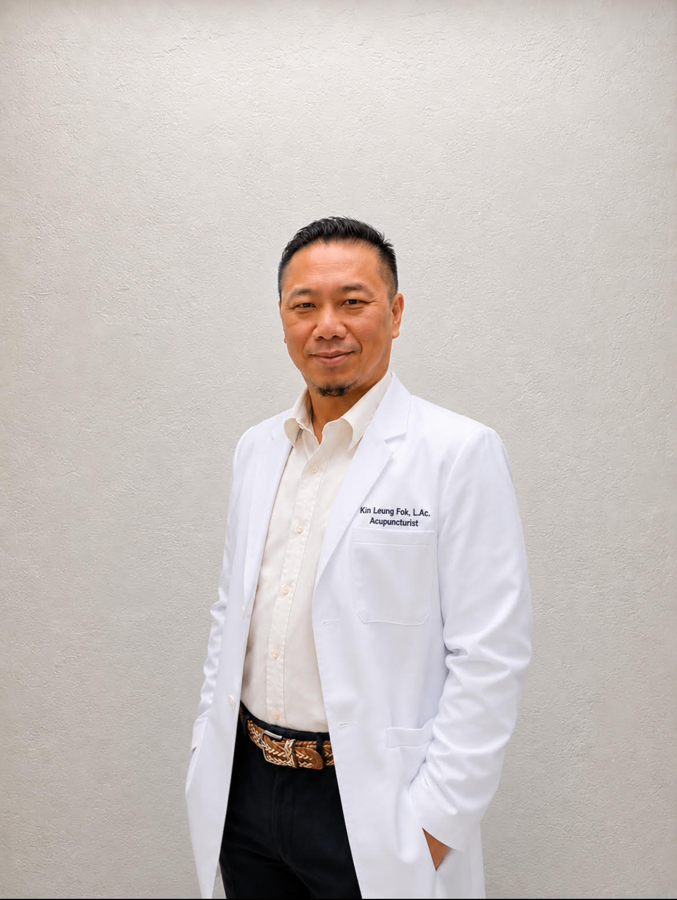
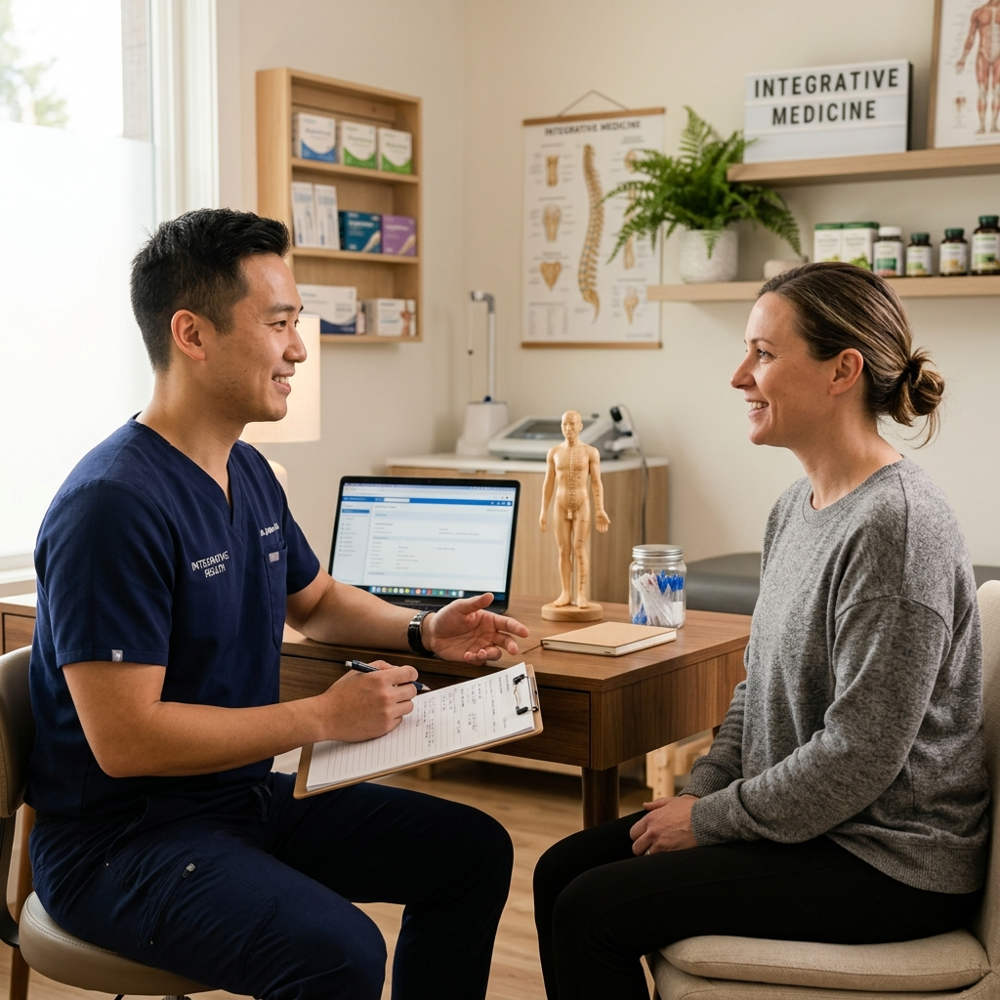
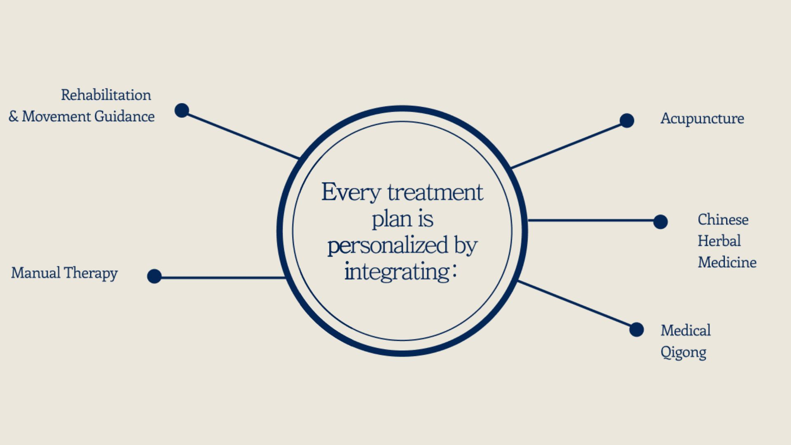
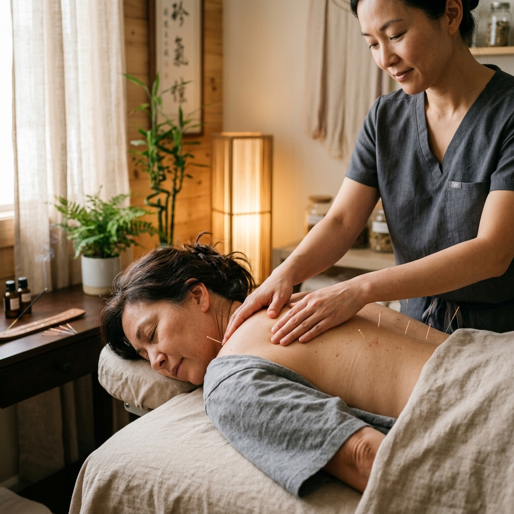

Helping people recover from injury, restore movement, and safely return to training and everyday life.
Book AppointmentHouse of Fok
The foundation of USHUN is rooted in my family’s tradition of Dit Da (Traditional Chinese Bone-setting) and manual therapy, passed down through generations. Founded by Kin Leung Fok, USHUN combines Traditional Chinese Medicine, Acupuncture, Manual Therapy, Medical Qigong, and Martial Arts into one unified philosophy: Helping people recover from injury, restore movement, and safely return to training and everyday life.

Kin Leung Fok
Sports Injury & Recovery Specialist
Kin Leung Fok, L.Ac., Dipl. O.M. | California Licensed Acupuncturist NCCAOM Diplomate
Kin Leung Fok is a California Licensed Acupuncturist and NCCAOM Diplomate specializing in sports injury recovery, pain management, and movement rehabilitation. Trained in Traditional Chinese Medicine, manual therapy, and Medical Qigong, Kin brings a integrative, evidence-informed approach to helping patients recover from injury and regain function.
Kin's approach is shaped by a lifelong background in martial arts and movement training, rooted in his family's generational practice of Dit Da (Traditional Chinese Bone-setting). This foundation informs his belief that effective treatment goes beyond pain relief — it means restoring confidence in movement and supporting a safe return to sport, work, and daily life.
Our Mission
At USHUN, we believe true healing goes beyond pain relief. USHUN helps you move with confidence again and safely return to the life you love. Whether returning to sport or simply moving through daily life with ease, USHUN helps you recover fully, rebuild confidence, and thrive again.

Sports Injury
Sports injury treatment using acupuncture and manual therapy to relieve pain, reduce inflammation, and speed recovery from sprains, strains, and overuse injuries—helping athletes safely return to training.
Pain Management
Acupuncture-based pain management for chronic and acute pain, including back pain, joint pain, and muscle tension, using Traditional Chinese Medicine to treat the root cause rather than just symptoms.
Movement Dysfunction
Movement dysfunction treatment that identifies muscle imbalances, poor mobility, and compensation patterns, restoring proper movement mechanics to reduce pain and prevent future injury.
Stroke Rehabilitation
Post-stroke rehabilitation support combining acupuncture and Medical Qigong to help improve motor function, coordination, and mobility as part of a patient's recovery journey.
Manual Therapy
Manual therapy rooted in traditional Chinese Dit Da bone-setting techniques, used to relieve muscle tension, improve joint mobility, and support natural pain relief and healing.
Medical Qigong
Medical Qigong therapy combining breathwork, gentle movement, and energy-based healing techniques to reduce stress, improve circulation, and support the body's natural recovery process.
Personalized treatment plans


Book an appointment
Start your recovery journey today. We are based in San Jose/Bay Area California with limited availability.
To book an appointment or to learn more, please text, call, or email Kin L. Fok.
(510) 394 8676 | kin@ushunhealth.com